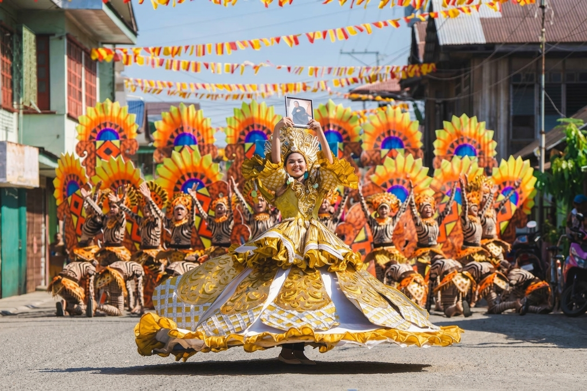

I'm Yancy, a photographer and photo editor. I work with portraits, weddings, and events, using Lightroom and basic Photoshop to bring attention to the people and moments in each frame.
2018–2024 Panaghiusa Festival photo editorLightroom + Photoshop Colour, light, and basic retouching

Festival photography · Selected work
PHOTO EDITING
Light, colour, and the small details.
Lightroom is my main editing tool, with Photoshop for basic adjustments and retouching.
01
Lightroom editing
Exposure, white balance, colour adjustments, cropping, and straightening for portrait and event photographs.
02
Basic retouching
Simple blemish cleanup and image adjustments in Photoshop, while keeping the photograph natural.
03
Working to your style
Use your reference images and feedback to understand the finish you want. Agree on the gallery size, scope, and delivery date before starting.
SELECTED PHOTOGRAPHY
Browse the collection.
Explore each collection. Select a photograph for a full-frame view.
35 PHOTOGRAPHS
Portraits
Faces, expressions, and colour.
1 / 35
Portrait
A Smile in White
A smiling portrait in white, with lace details, sheer sleeves, and tassel earrings. The softly blurred background keeps attention on her expression.
Street portrait
Colors of the Market
A portrait in a market aisle beneath colorful fabric canopies. Warm shop lights and the softly blurred stalls give the scene depth.
Outdoor portrait
A Pause in the Countryside
A portrait on horseback beneath a rustic wooden frame. Soft greenery and a patterned outfit bring color to the quiet outdoor setting.
Outdoor portrait
Green Among the Trees
A green outfit echoes the surrounding foliage in this horseback portrait. The blurred background keeps attention on the subject’s expression.
Outdoor portrait
Under the Wooden Frame
A seated portrait with the horse in the foreground and intersecting wooden branches overhead. The dark floral outfit stands out against the soft green background.
Beach portrait
Pink by the Shore
A bright pink outfit contrasts with the pale shore and blue-gray water. The chair and extended pose create a strong shape against the distant hills.
Fashion portrait
Warm Light, Dark Fabric
A seated portrait in black, framed by a cream upholstered chair. Warm light and the textured backdrop give the image an intimate, dramatic feel.
Fashion portrait
Lines and Lace
An expressive pose in a black lace outfit beside a tall upholstered chair. Raised arms and the woven backdrop bring movement and texture into the frame.
Fashion portrait
A Confident Pose
A black evening outfit against a cream chair and dark rustic backdrop. The raised arm and turned gaze give the portrait a lively, confident character.
Outdoor portrait
Blue in the Corridor
A portrait in a blue off-shoulder top, framed by white columns and green trim. The corridor leads the eye toward the subject.
Outdoor portrait
A Pause Outdoors
A seated portrait on stacked bamboo, with a wooded hillside in the background. The relaxed pose keeps the scene simple.
Close-up portrait
A Direct Gaze
A close portrait with a direct gaze, hoop earrings, and a white collar. The soft background keeps attention on the face.
Styled portrait
Blue and a Folding Fan
A portrait in a blue dress with a dark folding fan. Hanging fabrics add color and texture behind the subject.
Outdoor portrait
A Flower by the Veranda
A portrait beside a wooden veranda, with a white flower held near the face. Greenery and timber give the scene a warm outdoor setting.
Outdoor portrait
Under the Trees
A full-length portrait in a patterned dress, holding a light-colored hat. Sunlit leaves surround the subject and fill the background.
Close-up portrait
Between the Curtains
A close portrait framed by pale curtains and a darker inner edge. The hand beneath the chin and direct gaze give the composition a deliberate focus.
Outdoor portrait
A Seat in the Green
A seated portrait on a grassy slope, with a hat resting beside the subject. Layers of leaves fill the frame around her.
Outdoor portrait
Looking Back
A portrait beside a white railing, with the subject looking back toward the camera. The navy top stands out against the bright greenery.
Close-up portrait
A Touch of Pink
A close outdoor portrait with a pink flower tucked beside the face. The flower adds a bright accent against the green background.
Beach portrait
By the Water's Edge
A beach portrait on the sand, with waves catching the light behind the subject. The low viewpoint keeps the shoreline close to the frame.
Coastal portrait
An Afternoon by the Sea
A portrait leaning against a seaside railing, wearing sunglasses and a white top. Open water and a pale sky create an airy background.
Beach portrait
Color Against the Shore
A kneeling beach portrait in a brightly colored swimsuit. The pale sea and sky give the bold colors room to stand out.
Portrait
Pearls and a smile
A selected finished photograph from my portrait collection.
Portrait
A portrait in white
A selected finished photograph from my portrait collection.
Portrait
Seated studio portrait
A selected finished photograph from my portrait collection.
Portrait
A bright studio setting
A selected finished photograph from my portrait collection.
Portrait
By the water
A selected finished photograph from my portrait collection.
Portrait
Under the palms
A selected finished photograph from my portrait collection.
Portrait
Colour on the bridge
A selected finished photograph from my portrait collection.
Portrait
A moment in motion
A selected finished photograph from my portrait collection.
Portrait
Low-light portrait
A selected finished photograph from my portrait collection.
Portrait
At the desk
A selected finished photograph from my portrait collection.
Portrait · editing example
Blue dress, brighter finish
A portrait with more visible facial detail and a closer crop in the finished image.
Portrait
A moment by the shore
A relaxed portrait in shallow water, with pale sand and open blue sky.
Portrait
A smile on the path
A smiling outdoor portrait along a tree-lined path, with soft colour and a navy hoodie.
02 PHOTOGRAPHS
Graduation
Individual portraits and shared milestones.
1 / 2
Graduation
An individual graduation portrait
A graduation portrait with a warmer, softer finish and a tighter composition.
Graduation
Graduation, together
A group portrait with warmer colour and a more subdued background in the finished image.
07 PHOTOGRAPHS
Festival & celebrations
Costumes, movement, and community.
1 / 7
Pageant & event
Center Stage
A contestant in a black gown stands beneath blue and magenta stage lights at Panaghiusa Festival 2024. The wide frame includes the stage, screens, and surrounding light.
Festival
The Color of Celebration
A smiling performer in an elaborate green-and-gold costume. The radiating headdress and open gesture capture the energy of the celebration.
Festival
A Street Full of Color
A performer in a vivid pink costume stands among dancers on a decorated street. Bunting overhead and bold costumes fill the scene with the movement of a parade.
Festival
A Celebration in Gold
A smiling performer raises a framed portrait above her gold-and-white costume. Behind her, rows of dancers and colorful decorations fill the street with the energy of a celebration.
Festival
Framed by the Festival
A performer in a colorful costume appears between large painted festival props. The layered foreground frames the central figure.
Festival portrait
Leaves in gold
A close portrait framed by an elaborate leaf-shaped costume in gold and orange.
Festival portrait
A gesture in costume
A performer reaches toward the camera, bringing the decorated costume and expressive makeup into focus.
09 PHOTOGRAPHS
Places & everyday life
Small details and wider views.
1 / 9
Environmental portrait
Among the Greens
A woman in a woven hat holds a bundle of leafy greens. Her red shirt stands out against the soft layers of foliage around her.
Everyday life
Care in Small Moments
A person waters a bed of seedlings with a green watering can. The visible stream of water draws attention to the simple work of tending young plants.
Landscape
Between Two Bridges
Parallel bridges lead the eye toward greenery beyond the water. Reflections and a cloud-filled sky add depth to the scene.
Black & white
The Ride Ahead
A cyclist travels along a shaded road. Black and white brings out the rhythm of the trees, road markings, and afternoon shadows.
Night photography
Light Across the Dark
Red, white, and colored light trails stretch across a dark frame. Their curved paths turn an ordinary night scene into an abstract image.
Black & white
A Quiet Perch
A small bird rests on a diagonal cable. The black-and-white frame leaves space around the bird and emphasizes the intersecting lines.
Landscape
Still Water, Distant Hills
Hills and trees reflect in calm water beneath a softly colored sky. A small boat adds a point of interest near the far shore.
Everyday life
Building by the water
A worker leans against a concrete pillar at a construction site, framed by timber and the water beyond.
Everyday life
Work among the stones
A worker beside a pile of stones, with a reflection visible in the water in the foreground.
A CLOSER LOOK
From capture to finish.
Recovered pairs and supplied portrait previews. View both full frames, or explore the finish with the comparison slider.
Original screenshots + finished edits. These are recovered originals supplied as screenshots, paired with the finished photographs. Crops and resolutions differ. Side-by-side preserves each full frame; slider view shows the framing differences as well as the tonal changes.
BeforeAfter
↔
BACKGROUND
Behind the photographs.
2018–2024
Panaghiusa Festival Photo Editor
Photo-editing work for Panaghiusa Festival.
Photography
Portraits, weddings, and events
Photography experience across portrait sessions, weddings, and other events. The gallery above shows selected portrait, festival, and outdoor photographs.
A practical IT background
I also build business applications and previously worked as an IT Manager and IT Instructor at Surigao Education Center. That experience helps me work with files, troubleshoot problems, and follow a clear process.
I'm open to remote photo-editing work. Email me with the type of images, gallery size, editing style, deadlines, and expected hours. I'm based in the Philippines and looking for evening or flexible work.